CIFT for SMART-Style Traffic Simulation
Counterfactual Interaction Fine-Tuning beyond logged-future realism
2026-04-01
CIFT for SMART-Style Traffic Simulation
CIFT
A CIFT-first thesis direction for SMART/CAT-K-style tokenized traffic simulation: diagnose the gap between observational realism and interventional response, then fine-tune against search-guided counterfactual targets while preserving standard realism.
SMART baseline CAT-K / CLSFT reference Counterfactual stress suite Matched vs shuffled control
Current thesis line
p(\tau_{1:N}\mid H,M) \neq p(\tau_{-j}\mid H,M,\operatorname{do}(\tau_j=\tilde{\tau}_j))
WOSAC-style realism is necessary, but it does not fully test whether nearby agents respond plausibly when one agent’s future is externally changed.
Current method focus: search-guided CIFT is the mainline. PAIR is no longer the primary claim; it is only a later auxiliary ablation if the behavioral signal stabilizes.
Why This Project Exists
1. SMART is a strong simulator substrate
Tokenized autoregressive motion generation gives a scalable, elegant simulator for multi-agent rollout.
2. CAT-K solves an important problem
CAT-K / CLSFT improves closed-loop behavior by training on model-likely rollouts anchored to logged futures.
3. A different problem remains
After a localized intervention, the logged future may no longer be the correct target for affected responders.
Claim boundary: we are not arguing that CAT-K is bad. We are arguing that logged-future closed-loop realism and interventional response quality are different evaluation objects.
Problem Formulation
Observational simulation
\tau_{1:N} \sim p_\theta(\tau_{1:N}\mid H,M)
Standard realism asks whether the simulator can sample realistic futures conditioned on history and map.
Interventional response
\tau_{-j} \sim p_\theta(\tau_{-j}\mid H,M,\operatorname{do}(\tau_j=\tilde{\tau}_j))
Counterfactual evaluation asks whether nearby agents respond correctly when one agent is externally changed.
Key distinction from the problem formulation: counterfactual failure is not just OOD. It is covariate shift plus possible target invalidation, because the original logged future can stop being the right local reference.
The Baseline Architecture We Keep
SMART generator path
- vectorized map enters RoadNet
- agent motion tokens enter MotionNet
- temporal, interaction, and map-agent attention produce next-token distributions
- rollout remains autoregressive at inference
The deployed inference path stays SMART/CAT-K-style unless a later experiment explicitly changes it.

Counterfactual Diagnostic Framework
Stress-suite question
When one actor is forced to brake, merge, cut in, or otherwise change behavior, does the simulator produce the right localized response?
\text{CIRS / penalized CIRS} = \text{response quality} + \text{safety} + \text{validity} - \text{nuisance penalties}
Current families
- lead braking
- blocked lane
- cut-in
- merge pressure
- intersection conflict
- non-interference
- VRU incursion
Trusted Baseline Diagnosis
The first solid result is diagnostic, not methodological: on the reliable 120-case manifest, BC and CLSFT do not rank the same way under counterfactual stress.
| Model | Penalized CIRS-v2 | Collision rate |
|---|---|---|
| BC | 0.7344 | 0.1778 |
| CLSFT | 0.7141 | 0.2583 |
Focal Qualitative Example
Ground truth

17a010edfe6d47b3, follower 15, lead 22.
SMART-BC rollout

SMART-CLSFT rollout

Why The Project Pivoted Away From PAIR-First
What hidden-state probes showed
- geometry already predicts absolute future closeness well
- hidden states add stronger signal for dynamic closing and distance-drop structure
- this supports future-interaction supervision as a plausible idea
Why PAIR is no longer the mainline
- PAIR-only was too indirect for the core behavioral gap
- the stronger question is now behavioral: can we directly optimize interventional response?
- therefore the method pivot is search-guided CIFT first, PAIR later only as an auxiliary ablation
Search-Guided CIFT: Current Method
Pipeline
intervention case
-> short-horizon candidate branches
-> locality-aware branch scoring
-> soft first-action token target
-> CIFT token-KL update
-> matched vs shuffled controlw15/m03 branch-only targeter.
Current method equation
\mathcal{L}_{\text{CIFT}} = \mathcal{L}_{\text{token-KL to search target}} + \beta(m)\,\mathcal{L}_{\text{weak logged anchor}} + \mathcal{L}_{\text{stability constraints}}
The exact recipe is still changing. What matters is the principle: supervise the model with search-derived local response targets, not only logged futures.
Best Positive Mechanics Result So Far
The strongest current positive evidence is still the short refreshed branch-only w15/m03 mechanics run.
| Variant | Penalized CIRS-v2 | Collision Rate | Correct Direction |
|---|---|---|---|
| refreshed locality-aware branch-only matched | 0.398202 | 0.100000 | 0.600000 |
| refreshed locality-aware branch-only shuffled | 0.318686 | 0.166667 | 0.266667 |
\Delta_{\text{matched-shuffled}} = +0.079516
Weak Logged-Anchor Ablation
What changed
A weak placebo-only logged-token anchor was added as a local stability prior.
Result
| Variant | Penalized CIRS-v2 | Valid CIRS-v2 | Collision Rate |
|---|---|---|---|
| weak-anchor matched | 0.361773 | 0.775228 | 0.133333 |
| weak-anchor shuffled | 0.332857 | 0.713266 | 0.233333 |
w15/m03 result remains better.
Medium-Scale Gate: Negative Result
The first medium-scale CIFT recipe should not be scaled further in its current form.
| Variant | Penalized CIRS-v2 | Collision Rate | Correct Direction | Actor ADE | Responder ADE | Gap Error |
|---|---|---|---|---|---|---|
| medium matched | 0.352317 | 0.100000 | 0.400000 | 4.828479 | 9.987420 | 1.533412 |
| medium shuffled | 0.372241 | 0.100000 | 0.533333 | 13.212082 | 21.784404 | 3.757745 |
Constrained CIFT Gate: Also Negative
| Epoch | Matched Penalized CIRS-v2 | Shuffled Penalized CIRS-v2 | Matched - Shuffled | 95% CI |
|---|---|---|---|---|
| 000 | 0.367532 | 0.377063 | -0.009531 | [-0.085640, 0.051748] |
| 001 | 0.410692 | 0.384281 | +0.026411 | [-0.008054, 0.064872] |
| 002 | 0.363511 | 0.343696 | +0.019816 | [-0.006099, 0.051254] |
| 003 | 0.364691 | 0.412984 | -0.048293 | [-0.122378, 0.006887] |
Best held-out point: epoch_001. It shows a small matched-over-shuffled gain, but the confidence interval still overlaps zero and that same checkpoint fails the realism-preservation gate on corrected local validation.
What The New Notes Actually Say
Positive
- the evaluation gap is real
- the target signal is learnable
- matched-vs-shuffled controls are informative
- short-horizon branch supervision can carry nontrivial causal signal
Negative
- the current scalable recipe is misaligned
- realism preservation is not yet solved
- stronger response sensitivity can degrade standard validation
- current best result is still a short mechanics win, not a mature method win
Current Bottleneck
Not the bottleneck anymore
- token-target plumbing
- search-target generation wiring
- matched-vs-shuffled evaluation setup
- checkpoint loading / baseline trust
Actual bottlenecks
- target coverage and family balance
- per-epoch checkpoint selection
- preserving realism under stronger causal supervision
- teaching the model when not to react
- moving from first-token supervision to 3-5 step branch distillation
Next Method Revision
\text{Next step} = \text{selective CIFT} + \text{short-horizon branch distillation} + \text{adaptive anchoring} + \text{per-epoch validation gating}
intervention rows
-> split into placebo / nuisance vs causal / interaction-changing rows
-> distill 3-5 step branch response segments instead of first action only
-> keep weak logged-token anchoring only as an ablation
-> use weaker anchor on high-confidence causal rows
-> evaluate every epoch on held-out CIRS and small standard validationUpdated Scientific Claim
What we can claim now
- WOSAC-style realism is necessary but not sufficient for simulator trust.
- BC and CLSFT can rank differently under interventional stress.
- Search-guided CIFT carries a real matched-vs-shuffled signal.
- The current scalable recipe still fails the realism-versus-robustness tradeoff.
What we cannot claim yet
- CIFT is already better than BC overall.
- PAIR is the main source of improvement.
- the current constrained recipe solves the tradeoff.
- the present local metric is final.
Takeaway
Current thesis line: SMART/CAT-K-style simulators can be strong on logged closed-loop realism while remaining under-tested on localized interventional response. Counterfactual stress evaluation exposes that gap. Search-guided CIFT is a promising response, but the present constrained recipe still does not preserve realism well enough.
\text{evaluation gap is real} + \text{target signal is learnable} - \text{current recipe still breaks the realism gate}
Backup: What Changed Since The Old Deck
- dropped PAIR-first framing
- replaced early 4-batch / 20-pair story with CIFT-first evidence
- elevated the problem-formulation distinction between observational and interventional response
- added negative medium and constrained gates
- repositioned PAIR as optional later ablation only
- made the next step selective / constrained CIFT, not larger training
CIFT | Counterfactual Interaction Fine-Tuning